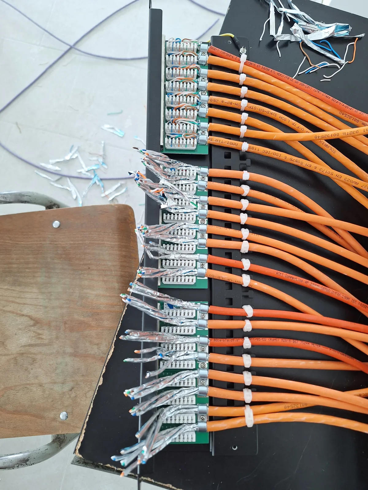
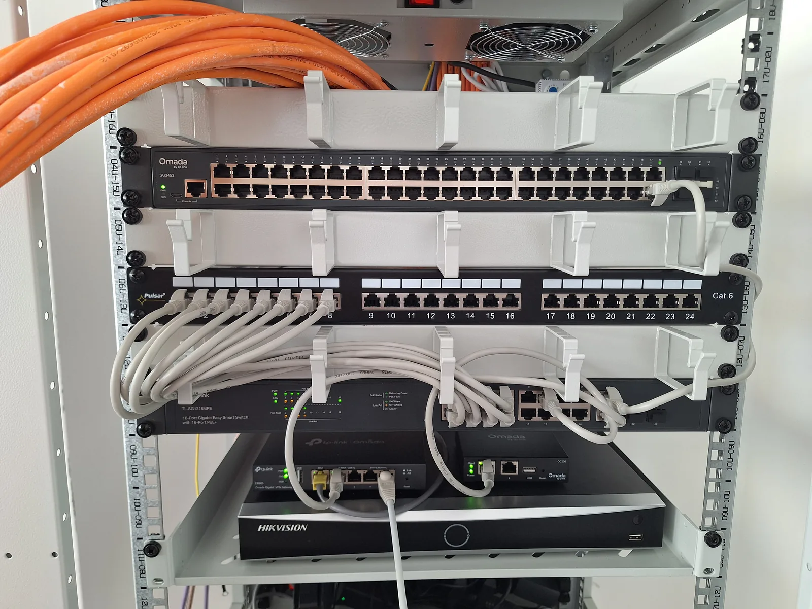
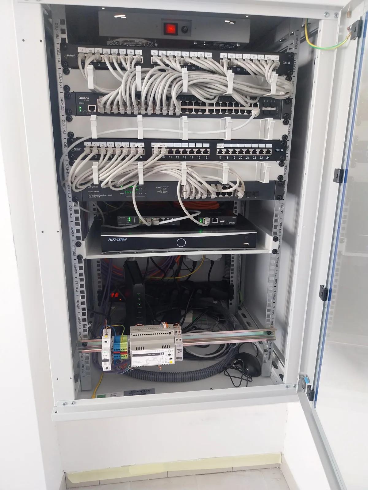
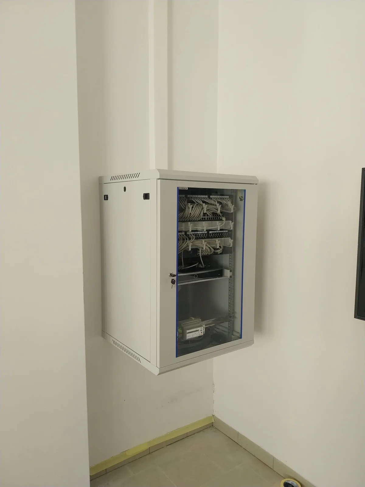

Educational Facility Network & L3 Remote Management
Kindergarten and School Infrastructure — Slovakia
01 / Overview & Objective
The project involved designing and deploying a complete, greenfield network and surveillance infrastructure for a newly constructed educational facility (kindergarten and school) in Slovakia. The goal was to establish clean, reliable, and easily maintainable structured cabling, full Wi-Fi 6 coverage, isolated IP CCTV monitoring, and secure L3 remote administration without requiring recurring on-site technical visits.
- Isolation: cameras have no internet access and are separated from staff and classroom traffic.
- Gateway offload: continuous 24/7 video must not pass through the router CPU.
- Two access paths: staff view cameras via the Hik-Connect app with no network setup; the administrator gets full encrypted L3 access through WireGuard.
02 / Hardware & Topology
| Role | Device | Notes |
|---|---|---|
| ISP terminal | Sagemcom F@st 5670 (GPON) | Slovak Telekom FTTH, dynamic public IP. Wi-Fi radios disabled. |
| Gateway | TP-Link Omada ER605 v2 | Inter-VLAN routing, ACLs, WireGuard server. |
| Controller | TP-Link Omada OC200 | Hardware SDN controller, PoE-powered. |
| PoE switch | TP-Link TL-SG1218MPE | 16× GbE PoE+ (802.3af/at, 250 W budget) + 2× GbE uplink. |
| Access switch | TP-Link JetStream TL-SG3452 | 48× GbE + 4× SFP, L2+ managed. Primary endpoint distribution layer: 802.1Q VLANs on the access ports for wall outlets, PCs and printers. |
| Wireless | 2× TP-Link Omada EAP610 v2 | Ceiling-mount AX1800 Wi-Fi 6, PoE-powered. |
| NVR | Hikvision DS-7608NXI-K2 | 8-channel 4K AcuSense, 4 TB WD Purple. |
| Cameras | 7× DS-2CD2047G2H-LIU 1× DS-2CD2143G2-I |
4 MP bullets (Smart Hybrid Light) + 4 MP IK10 dome. |
| Enclosure | 19" wall-mount rack | Active roof fan, Cat6 STP patch panels, surge-protected PDU. |
Physical & logical topology
Installation photos




03 / Core Architecture
Subnets & policy
| Zone | Subnet | Gateway | Hosts | Policy |
|---|---|---|---|---|
| WAN transit | ISP-assigned private /24 | ISP modem | Sagemcom LAN, ER605 WAN | ER605 WAN set as DMZ host on the modem. |
| VLAN 1 — Management | 10.x.1.0/24 |
.1 |
ER605, switches, OC200, APs | Network devices only. |
| VLAN 10 — CCTV | 10.x.10.0/24 |
.1 |
NVR (.10), cameras (.21–.28) |
Camera WAN egress blocked at the gateway. |
| VLAN 20 — Staff LAN | 10.x.20.0/24 |
.1 |
Office and classroom clients | Internet allowed. Access to NVR allowed. |
| WireGuard VPN | 10.y.0.0/24 |
.1 |
Remote admin peer | Routed access to VLAN 1, 10, 20. |
Traffic flow: video stays on the switch
All eight cameras and the NVR are on the TL-SG1218MPE in the same VLAN (10). The eight continuous H.265 recording streams are therefore switched at L2 inside the switch backplane and never cross the trunk to the ER605. The router only handles video when a client in VLAN 20 or on the VPN actively opens a live view or playback, which is a short, on-demand flow rather than 24/7 load.
PoE capacity
| Load | Estimated draw |
|---|---|
| 8× cameras | ~52 W |
| 2× EAP610 | ~24 W |
| 1× OC200 | ~4 W |
| Total / budget | ~80 W / 250 W (~32%) |
The ~170 W headroom covers the current spike when camera IR and white-light LEDs switch on at night, so ports and APs do not reboot under load.
04 / Remote Operations & Management
Remote administration is split into two tiers with different access paths. Routine monitoring runs through the Omada cloud; anything that touches the isolated subnets goes through WireGuard.
Tier 1 — Omada cloud (OC200)
Daily operationsUse case
Daily health checks, quick triage and routine changes from a phone or the web portal.
Capabilities
- Real-time client analytics, bandwidth usage and port status for Omada-managed devices (gateway, access points, adopted switches).
- Wi-Fi changes without VPN: SSIDs, radio power, channel width, temporary guest access.
- The on-site OC200 controller keeps an outbound connection to the Omada cloud, so no inbound ports are opened.
Tier 2 — WireGuard L3 tunnel
Deep accessUse case
Low-level hardware administration, embedded device maintenance and the video subsystem.
Capabilities
- Routed L3 access into the isolated subnets
10.x.1.0/24,10.x.10.0/24and10.x.20.0/24. - Full NVR web interface: archive retrieval, firmware updates and per-camera stream diagnostics. None of this is reachable from the public WAN.
- Direct switch web UI / CLI on the management VLAN for L2+ features, without a cloud proxy in the path.
Decoupling daily monitoring from low-level infrastructure access gives defense in depth. Routine metrics and wireless changes stay available on the go through the Omada cloud controller, while sensitive embedded devices (NVR, camera feeds, switch management planes) have no inbound exposure to the public WAN and are reachable only through authenticated, peer-to-peer WireGuard tunnels.
05 / Technical Challenges & Troubleshooting
Subnet conflict & remote lockout prevention
The admin workstation's home network and the remote ISP modem both used the same private /24 range (the ISP modem's factory default). With a full tunnel, local traffic broke immediately.
Re-addressing the modem remotely was rejected: its DHCP restarts, the ER605 WAN address changes, the DMZ entry becomes invalid and the site is locked out until someone visits in person.
Modem left unchanged. Split tunnel on the WireGuard client — only internal subnets are routed through the tunnel:
AllowedIPs = 10.x.1.0/24, 10.x.10.0/24,
10.x.20.0/24, 10.y.0.0/24
Local internet stays on the local gateway; site subnets are reachable over the VPN.
Dynamic carrier IP & WireGuard handshake
Tunnel up but stuck at 0 B received, 444 B sent. The Omada-generated client profile used the gateway's private WAN address (behind the ISP modem) as the endpoint, which is not reachable from the internet. The GPON line also gets a public IP that changes periodically.
ER605 WAN address set as DMZ host on the Sagemcom so the WireGuard UDP port reaches it. A DDNS client on the modem tracks the public IP. Client endpoint:
Endpoint = <DDNS hostname>:<WireGuard UDP port>
PersistentKeepalive = 25
Keepalive holds the NAT state open; DDNS follows IP changes.
NVR web access: certificate warnings & internal DNS
Staff opening the NVR web interface got a full-page "Not secure" warning and had to type a raw IP address from another VLAN.
- The NVR ships with a self-signed certificate that no browser trusts.
- The NVR sits on an isolated LAN with no public hostname, so a public CA such as Let's Encrypt cannot issue a certificate for it.
- Raw IP addresses across VLANs are hard for non-technical users to remember.
- Local DNS: A-record on the ER605,
nvr.site.lan → 10.x.10.10, resolvable on the LAN and over WireGuard. - NVR certificate: HTTPS enabled on port 443. New self-signed certificate issued for
nvr.site.lanwith a SHA-256 signature and exported asNVR_CA.cer. - Client onboarding: a Windows batch script imports the certificate into the Windows Trusted Root store with
certutil, creates a desktop shortcut to the NVR and prints short instructions for the user.
Result: no certificate warnings on staff machines, and the NVR opens from a desktop icon. Setting up a new workstation means running one script as administrator.
Internal DNS not resolving over VPN
Over the tunnel, 10.x.10.10 answered in 22 ms but nvr.site.lan returned Non-existent domain. Omada binds custom LAN DNS records to interfaces and did not serve them to the WireGuard interface.
Extended the scope of the A-record from 03 on the ER605 to queries arriving on the WireGuard interface. hosts entries on the admin workstation as a fallback.
06 / Known Limitations
No battery backup (UPS)
Known limitation07 / Operational Verification
https://nvr.site.lan with no certificate warning.